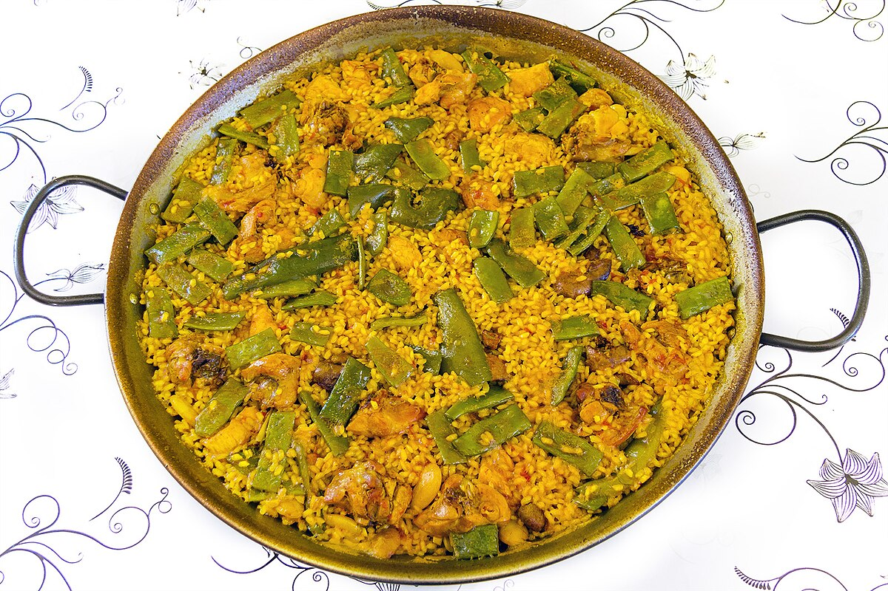

Receta 2: Paella

Ingredientes:
- 300 g de arroz
- 600 ml de caldo de pollo o pescado
- 200 g de pollo troceado
- 200 g de mariscos (gambas, mejillones, calamares)
- 1 pimiento rojo
- 2 tomates maduros
- 1 diente de ajo
- 100 g de guisantes
- 1 sobre de azafrán o colorante
- Aceite de oliva, sal y pimienta al gusto
Preparación:
- En una paellera, calienta el aceite de oliva y sofríe el ajo y el pimiento rojo picado.
- Añade el pollo troceado y dóralo durante unos minutos.
- Ralla los tomates y agrégalos a la paellera, cocinando hasta que reduzcan.
- Incorpora el arroz y remueve para que se impregne del sofrito.
- Añade el caldo caliente junto con el azafrán o colorante y los guisantes.
- Distribuye los mariscos sobre la paella y cocina a fuego medio hasta que el arroz esté en su punto.
- Deja reposar la paella durante unos minutos antes de servir.
¡Prueba esta receta!